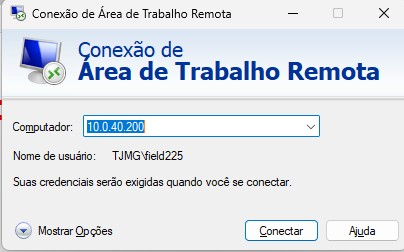
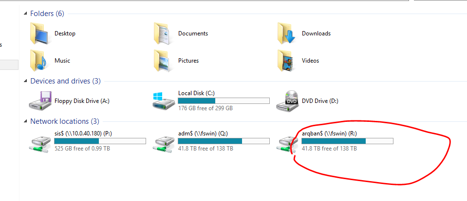
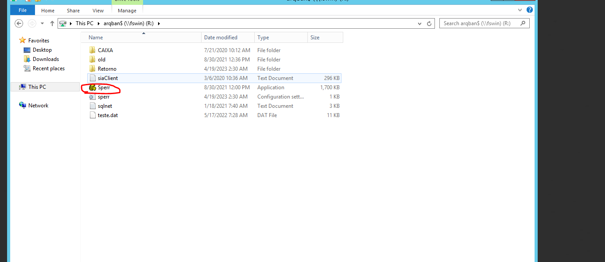
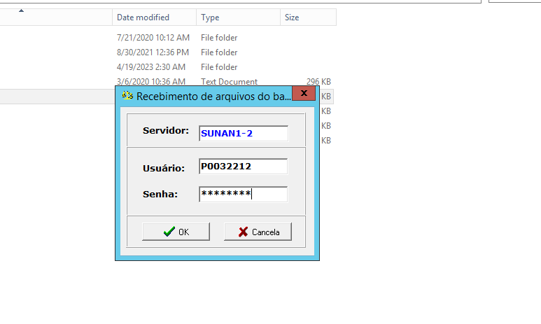
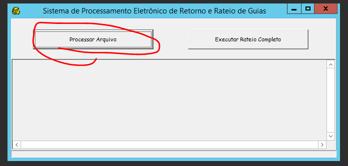
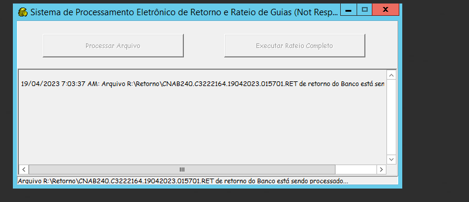
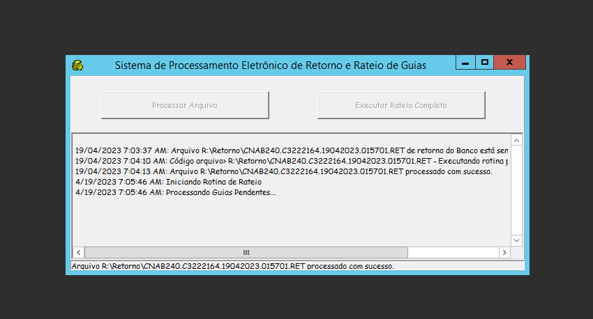
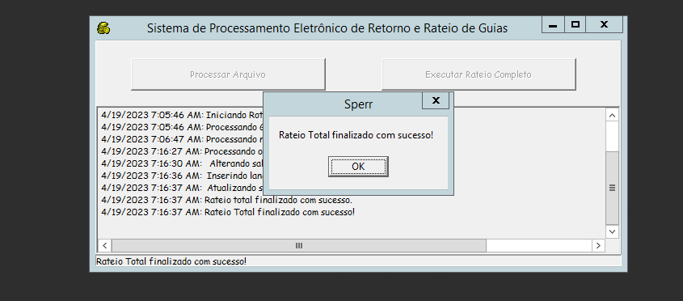
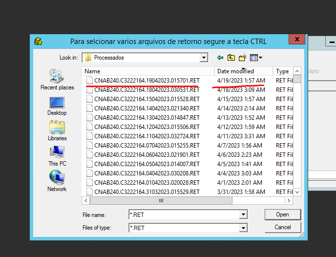

Manual Rateio do Banco
Acesso e Configuração Inicial
Conexão remota IP: 10.0.40.200
Usuário: (Coloque seu Field)
Senha: (Digite a senha do seu Field)
Ao entrar na máquina virtual, abra o explorador de arquivos > Este computador > Acesse a unidade R:.
Procure o aplicativo Sperr.
Ao clicar no Sperr, uma janela de login será exibida. Use sua matrícula P como usuário e sua senha.
Processamento do Rateio
Agora vamos processar o arquivo de rateio do banco.
ATENÇÃO! Se na listagem aparecerem arquivos com menos de 1Mb, não continue. Avise o Humberto para que ele retifique a listagem antes de rodar o banco.
Selecione o arquivo .RET e clique em OPEN.
OBS: Tire um print desta tela e salve no caminho Digital\Certminas\_backup_rateio_banco\2025\09. Setembro\19.09.25
Após clicar em OPEN, o rateio começará a ser processado.
Atenção: Após um tempo, aparecerá a mensagem perguntando se há mais arquivos .RET a serem carregados. Caso não haja, escolha a opção No.
Após escolher uma das opções acima, o rateio continuará o procedimento.
Quando o rateio for concluído, a mensagem de finalização será exibida.
OBS: Tire um print da tela de finalizado e salve no mesmo caminho: Digital\Certminas\_backup_rateio_banco\2025\09. Setembro\19.09.25
Verificação Final
Após o procedimento, clique em Processar Arquivo novamente. Você perceberá que o arquivo .RET desapareceu da lista inicial, pois foi processado.
Clique na pasta Processados e verifique se o arquivo que foi selecionado no início do rateio está lá.
